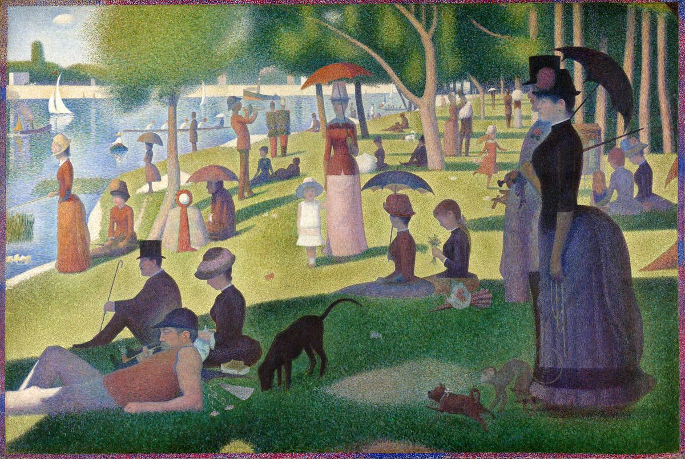

A Sunday on La Grande Jatte

Palette
- Hunter green · your word: Hunter green
- Olive green · your word: Khaki
- Eggplant · your word: Plum
- Ash · your word: Ash
- Onyx · your word: Gunmetal
- Café au lait · your word: Taupe
Seurat built the picture from small touches of unmixed color, trusting the eye to blend them from a distance (optical-mixing), after the color theories of Chevreul. Some of his zinc yellow has since darkened to an ochre-brown, so the sunlit grass was once brighter; in 2004 color scientist Roy Berns rebuilt its original look digitally. The border of red, orange and blue dots was added in 1888–89.
Image
Wikimedia Commons · Public domain

Hex values are screen approximations. Every page lists its sources.